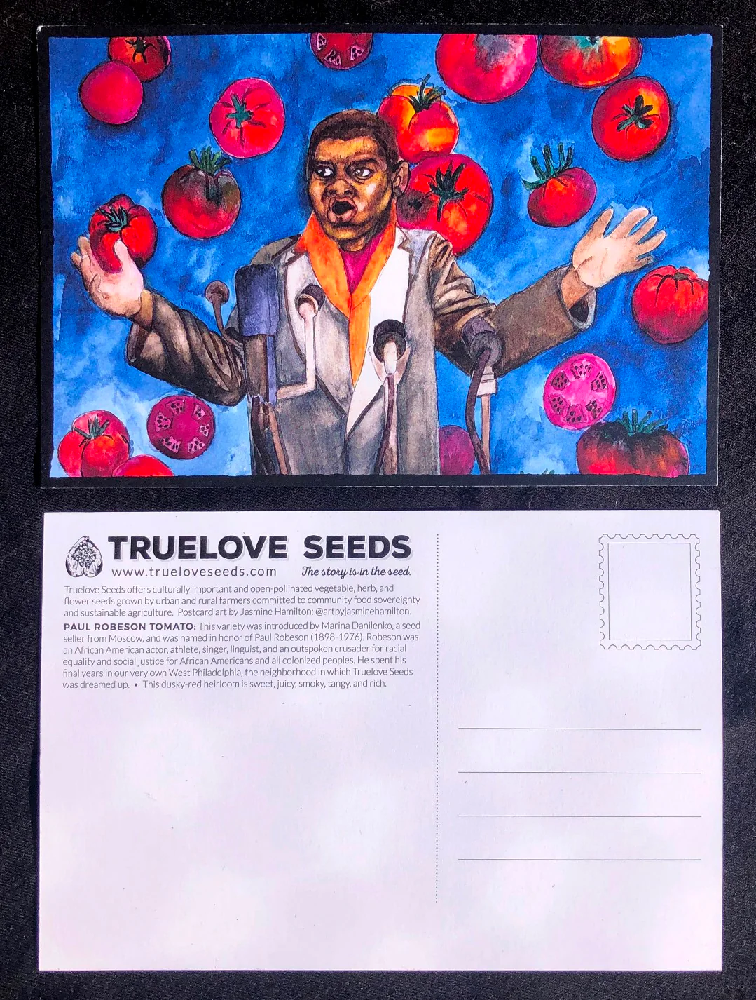

004 — Seed Keeper
or, how to undo a system without setting yourself on fire
Soft Authoritarianism and Other Bedtime Stories
Transcript for GitHub
Some people plant flowers.
I plant questions. And lettuce. And Paul Robeson tomatoes from a museum seed bank.
I throw seeds over fences and I talk to the plants like they’ll remember me in the next life.
Because they might.
I don’t work in advertising because I believe in brands.
I work in advertising because I know that value is assigned. Arbitrary. A game.
And I like bending the rules from the inside.
I don’t just center People of Color.
I center Black folks. African Americans. Californians. Myself.
Because those are the stories I know in my bones. And if I don’t tell them, who will?
Every semester, I tell my students they’re gatekeepers.
Even if they’re broke, overlooked, or stuck.
Because someone’s looking up at them, waiting for the door to open.
I tell them to fill the room with all their parts. Even the messy ones.
I ask questions that make capitalism itch.
I wonder aloud if Western ways are the only ways. (They’re not.)
I believe we get freer when we imagine different shapes for the world.
I believe that includes how we treat trees. And neighbors. And ourselves.
I believe in men—when they are fighting the right things.
And I believe in women who refuse to make themselves small.
I believe in being the person I want to be, not the one the system wrote a script for.
Some days, all I do is plant a seed.
But that’s enough.
Because I know how many futures live inside one small thing.
🌱 Listener Reflection Prompt
- What seeds have you planted—literal or metaphorical?
- Who are you centering when you work? When you rest? When you make decisions?
- What version of yourself have you refused to shrink into this week?
✍️ Ritual Invitation
Add your seed story to the /rituals folder.
It doesn’t have to be a manifesto. Just tell us what you’re growing.
Even one sentence counts.
📝 Additional Notes
Plant actual seeds.
This story was inspired by a pack of True Love Paul Robeson tomato seeds I got at the Oakland Museum.
I thought they had expired, and I opted to plant them nearly six years later—and they sprouted—offering fruit, resistance, and an opportunity for me to give food plants away to friends and neighbors.
Saving and sharing food seeds is a quiet, radical form of resistance. It’s a vote for collective survival, biodiversity, and sovereignty. Even casually sprouting in an AeroGarden and gifting plants is a way of saying: we take care of each other.
You’re keeping knowledge alive. You’re preserving access. You’re choosing abundance over control. That’s not just friendly—that’s revolutionary in a world where food systems are increasingly privatized and fragile.
Stay off the grid and in the soil.